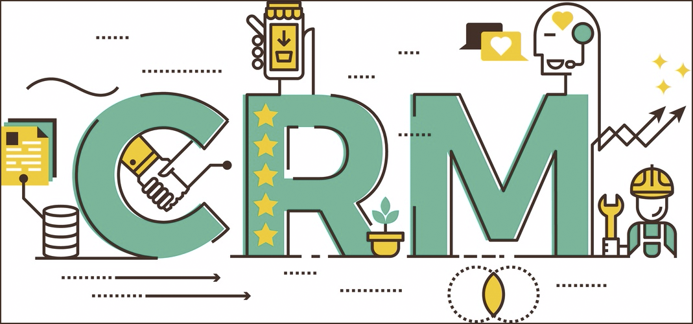

Bulut Bilişim (Cloud Computing) Nedir?
Bulut bilişim fikrinin temelleri 1950’li yıllarda atılmıştır. İnternet devlerinden olan Amazon, veri merkezlerini modernize ederek bulut bilişimin gelişmesinde anahtar bir rol oynayarak ilk gerçek bulut bilişim hizmeti olan Amazon S3’ün 2006 yılında hizmete girmesini sağladı. 2008’in ortalarına gelindiğinde, Gartner (Danışmanlık ve Araştırma Şirketi) bulut bilişimi bilgi teknoloji hizmetleri sektöründe hem kullanıcılar hem de tedarikçiler arasındaki ilişkiyi değiştirebilecek potansiyeli işaret etti. 2008 den bu yana Dünya’da yaygın bir şekilde kullanılmaya başlandı. Son birkaç yıldır ülkemizde yaygınlaşan bu teknoloji oldukça hızlı bir şekilde büyümeye devam ediyor.Günümüz teknolojisinde ki mevcut cihazlarda kullanıcılar her geçen gün daha fazla kişisel veri ve data saklamak istediği için barındırma kapasitesi büyük sorunlara sebep olmaktadır. Bununla birlikte cihazların özellikleri, kapasiteleri gittikçe artıyor. Bilgisayar, notebook, netbook, ve taşınabilir akıllı cihazların teknoloji ve kapasitesinin artmasıyla orantılı olarak fiyatlar da yükseliyor. Tüm bu sorunlara çözüm olarak ortaya çıkan Bulut (Cloud) Teknolojisi, internet üzerinden, erişimde bulunulan yazılım uygulamaları, veri depolama hizmeti ve işlem kapasitesi olarak tanımlanmaktadır.
Ücretsiz CRM Programları Listesi
Müşteri ilişkileri yönetimi (CRM) programı, şirketlerin birden fazla temas noktasından veri toplamasını ve her etkileşimi izlemek ve analiz etmek için işletmelerin dijital araçlarla donanımlı hale gelmesini sağlıyor.
APPTİVO
Apptivo, iletişim organizasyonu, proje yönetimi ve takibi ve finansal işlemler için kullanılabilen bulut tabanlı bir CRM'dir. Apptivo'nun ücretsiz sürümü üç kullanıcı ve 500 MB'lık veri depolama alanı ile sınırlıdır. Ücretsiz sürümün temel özellikleri arasında satış listeleri, irtibat bilgileri, fırsatlar ve bekleyen anlaşmalar için satış yönetimi araçları bulunmaktadır.Apptivo ayrıca Android ve iOS cihazlar için uygulama desteği de sunuyor.
BİTRİX24
Bitrix24, projeleri yönetmek, iş birliği yapmak ve pazarlama çalışmalarını desteklemek amacıyla tasarlanmış bir araç paketi arayan kuruluşlar için sağlam bir CRM seçeneğidir. Bitrix24'ün ücretsiz sürümü 12 kullanıcı ve 5 GB veri depolama ile sınırlıdır. Bitrix, iş operasyonlarının çoğunu tek bir platforma getirmek için tasarlanmıştır.Bildirimlere, destekli raporlamaya ve gruplara veya tartışmalara abonelik gibi otomatikleştirilmiş süreçler, işletmelerin ilerlemeyi izlemesine ve yaklaşan fırsatları planlamasına yardımcı olabilir.
SUİTCRM
SuiteCRM, yeni özellikler ve sürekli destek ile büyümeye devam eden, açık kaynaklı bir alternatiftir. Bugün piyasadaki en popüler açık kaynak kodlu CRM şirketi olduğunu iddia ediyor. 4 milyondan fazla kullanıcı, 800.000 indirme ve 87.000 üyeden oluşan bir geliştirici topluluğuna sahip. SuiteCRM ayrıca geleneksel CRM görevlerinin ötesine geçen birçok özellik sunar.
